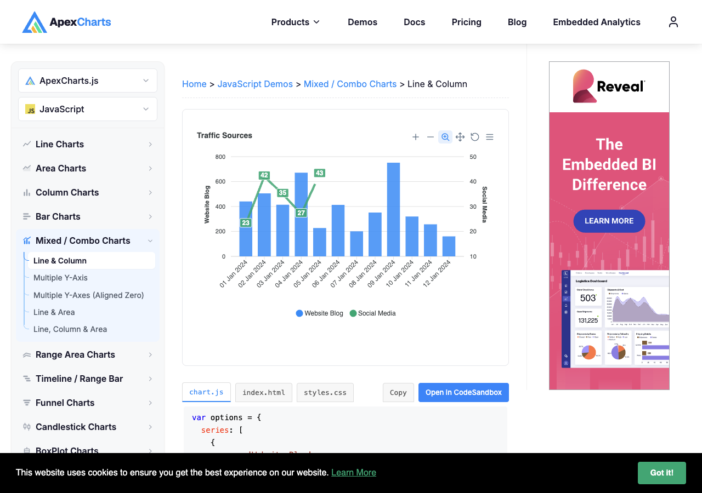
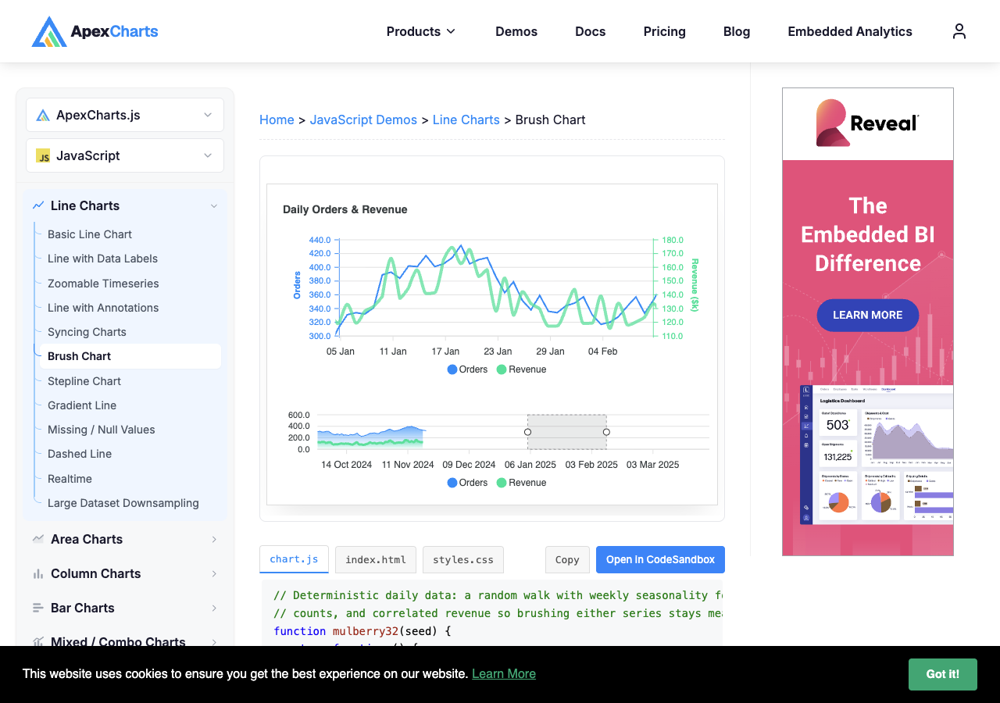
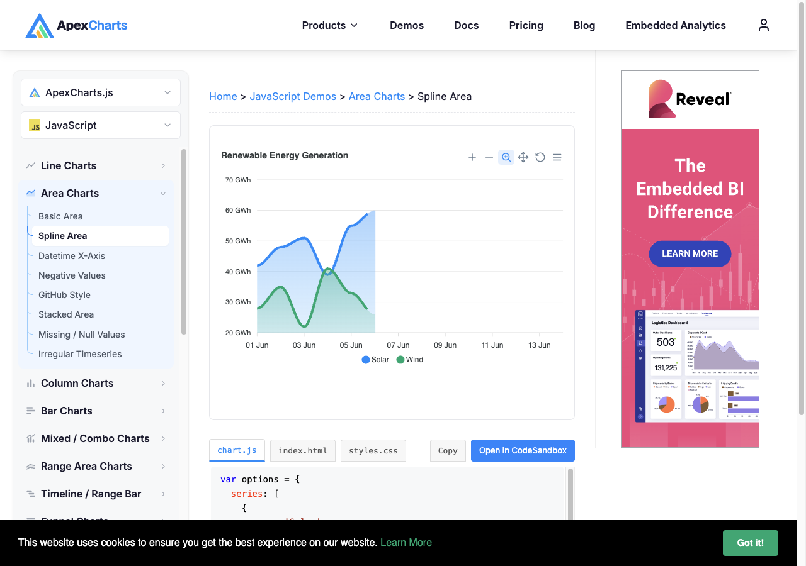
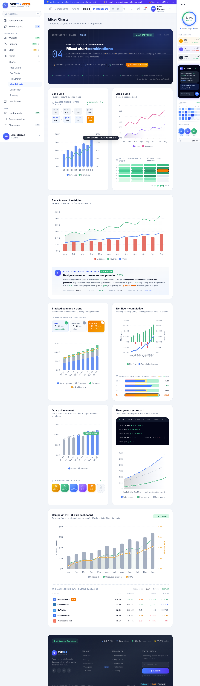
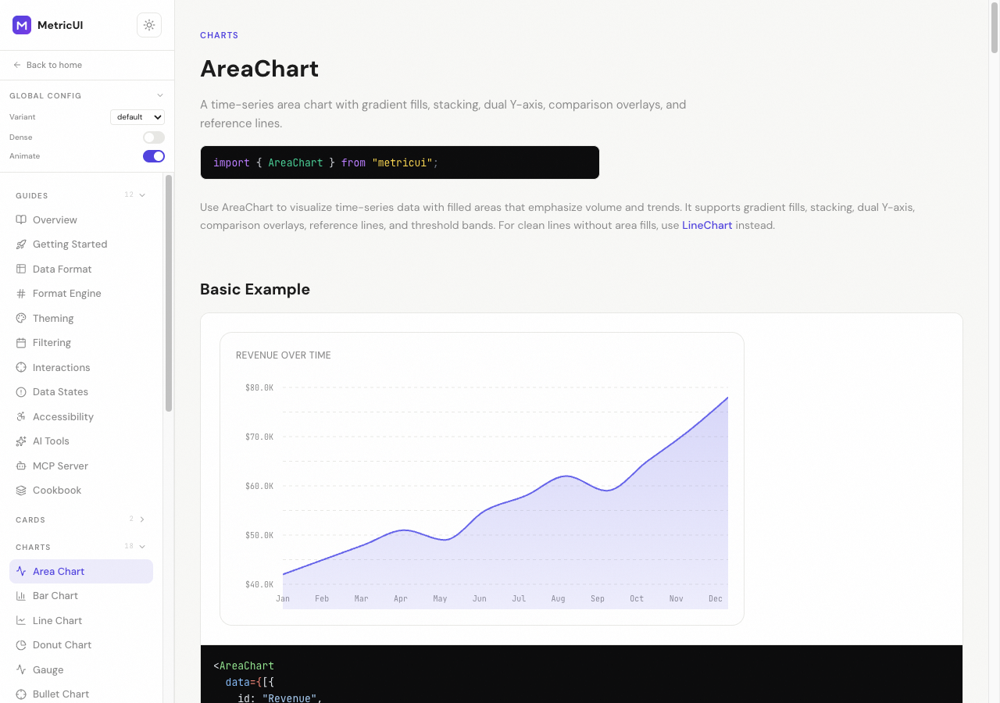
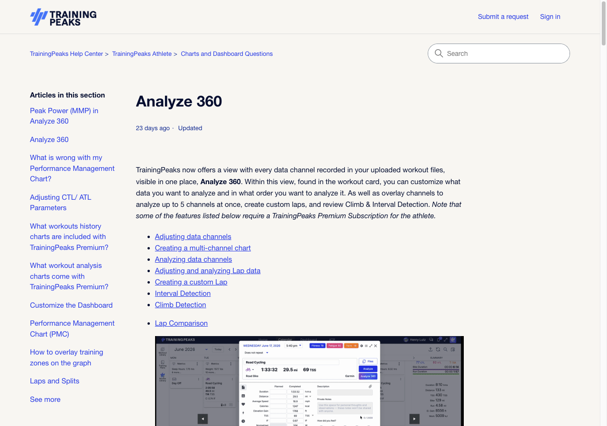

1 · Apex dual-axis (line + columns) Best match for pace/SWOLF + volume. Thin line, markers, second Y-axis.

2 · Apex brush / zoom Detail chart + context strip — good for long swim sets.

3 · Apex spline area (multi-series) Smooth area fills; note different line weights between series.

4 · Mixed dashboard gallery Bar+line, area+line, dashed cumulative — dashboard density reference.

5 · Area + bands language Clean gradient area; ignore purple — map to mint/amber in our DS.

6 · TrainingPeaks Analyze 360 Multi-channel endurance analytics mindset (overlay channels, laps).